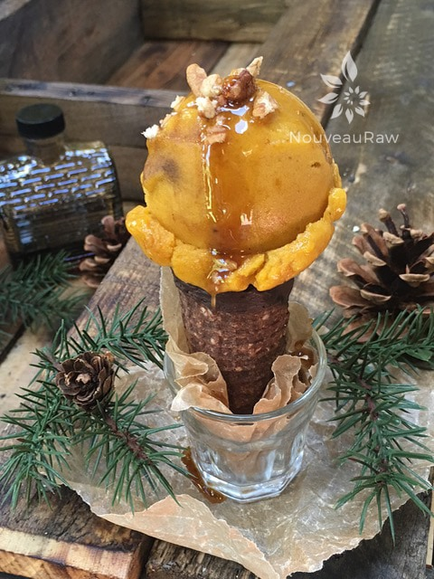
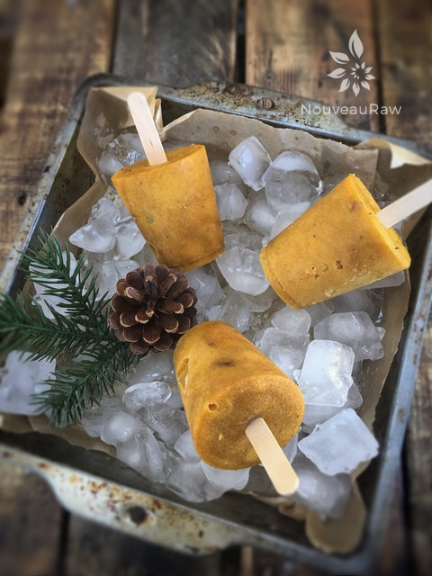

Pumpkin Spice Banana Ice Cream
~ raw, vegan, gluten-free, nut-free ~
I was going to jump right into this recipe, but I first wanted to share a few tips with you. Always start off with frozen RIPE bananas. You know, the ones that have brown polka-dots on them. Ripe bananas are sweeter and easier on your digestion.
Coconut cream is not 100% required for making this ice cream, but the fat in the coconut cream will give it a much smoother texture. Without the cream, it will be “icy.” You can make your own with Young Thai coconuts, or you can use canned. I have placed links below to help you through either process.
Pumpkin puree can be made with fresh pumpkins, but if they are not in season when the time comes, you can use canned, but please look for top quality when doing so. Look for organic and BPA-free cans. Again, see below for how to make your own pumpkin puree and pumpkin spice.
Maple syrup, I chose maple syrup because it is more alkalizing for the body, but you can use any sweetener of your choice. Bottom line, remember that the end result of a recipe will only be as good as the quality of ingredients. I hope you enjoy it. Blessings, amie sue
Ingredients:
Yields 2 1/2 pints
Preparation:
- Place the frozen banana slices, coconut cream, pumpkin puree, maple syrup, pumpkin spice, and salt in the food processor, fitted with the “S” blade. Process until creamy.
- If you don’t have pumpkin spice on hand, you can make it yourself by combining: 2 tsp ground ginger, 1 tsp Allspice, 1 tsp nutmeg, and 4 tsp ground cinnamon. This will make plenty of extra for future recipes.
- Place in a freezer-proof container and freeze. Remove from the freezer 10-15 minutes before eating. You can also eat this right away as delicious soft-serve ice cream.
- For the cone recipe, click (here).
Freezing Suggestions for Ice Cream:
-
Freeze in popsicle molds or 3 oz Dixie cups with a popsicle stick inserted.
-
-
Store the ice cream in the very back of the freezer, as far away from the door as possible. Every time you open your freezer door you let in warm air. Keeping ice cream way in the back and storing it beneath other frozen-sold items will help protect it from those steamy incursions.
-
Wish to make your own raw ice cream, wonder what machine I might recommend, and more? Click (
here) to check out the Reference Library!


Take part of the ice cream batter and create some Dixie Pops for quick enjoyment.
© AmieSue.com